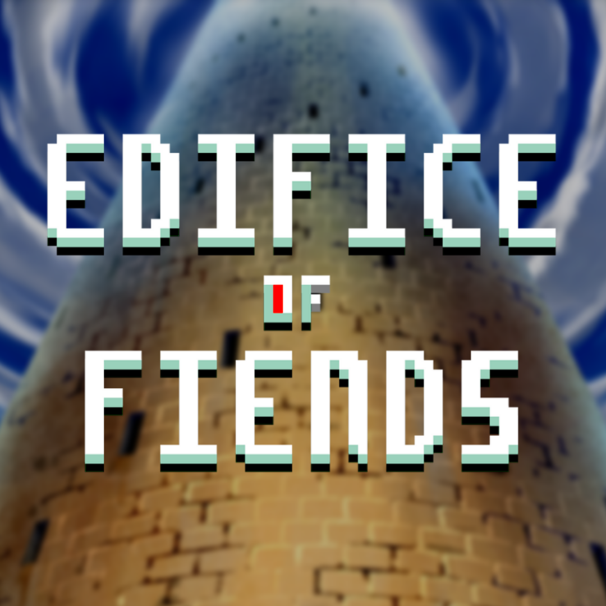

Role :
Independent Developer
Development Time : 4 Months (November 2020 - February 2021)
Platforms : Steam, Windows
Genres : Singleplayer, Roguelike, Strategy RPG
Development Time : 4 Months (November 2020 - February 2021)
Platforms : Steam, Windows
Genres : Singleplayer, Roguelike, Strategy RPG
Game Info
Edifice of Fiends is a Singleplayer Rogue-Like Strategy RPG.My Experience
I learned many things from this project such as scope management, level designs, and enemy designs.Some challenges I overcame include polishing and publishing the game.